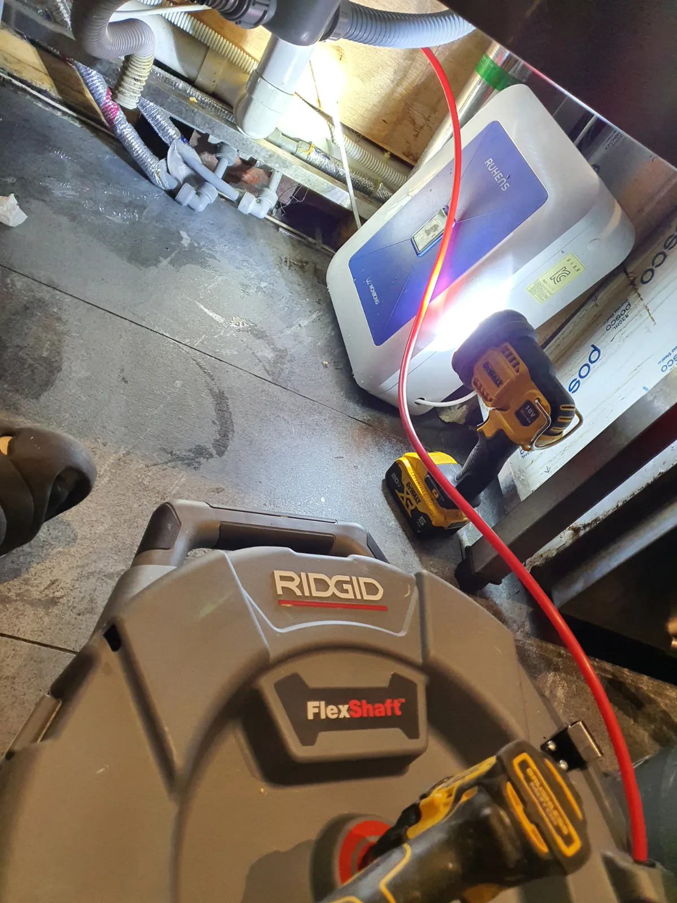

싱크대막힘 동작구 상도동 내시경 진단과 기름때 제거
상도동 싱크대 배관 내부에 쌓인 기름때와 음식물 찌꺼기를 배관 내시경으로 확인하고, 리지드 플렉스샤프트를 이용해 배관스케일링과 통수 작업을 진행했습니다.
서울 · 동작구 · 싱크대막힘
동작구에서 실제로 해결한 싱크대막힘 사례를 바탕으로 싱크대뚫는업체를 찾을 때 확인할 증상과 작업 방법을 정리했습니다. 물이 천천히 빠지는 증상, 싱크대 물이 안 내려가는 증상, 싱크대 역류, 악취와 반복 막힘 등은 원인이 서로 다를 수 있어 현장 진단 후 필요한 범위를 안내합니다.
물이 천천히 빠지는 증상, 싱크대 물이 안 내려가는 증상, 싱크대 역류, 악취와 반복 막힘처럼 비슷해 보이는 증상도 원인 구간은 다를 수 있습니다. 신라건축설비는 실제 출동 기록을 기준으로 증상·원인·사용 장비·작업 결과를 공개합니다.
주요 점검·작업: 석션·샤프트·배관내시경 점검과 배관 스케일링
싱크대막힘·싱크대뚫는업체 전체 서비스와 지역별 사례 보기 →